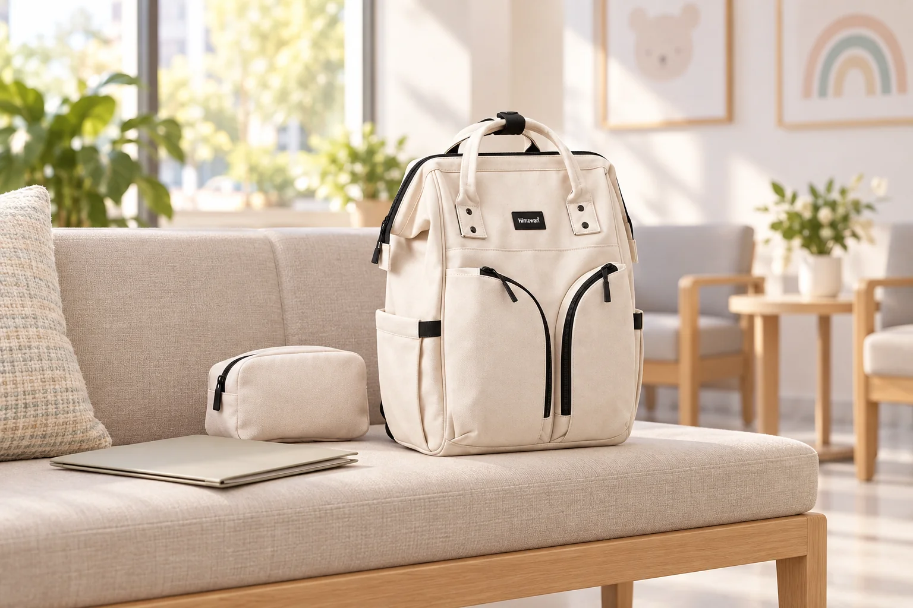

아이와 진료 예약이 있는 날: 가방은 접수부터 귀가까지

아이와 함께 병원에 가는 날에는 집을 나서기 전보다 접수대와 대기 공간에서 물건을 찾는 순간이 더 바쁩니다. 진료 내용과 준비 서류는 방문할 기관의 안내를 따르되, 가방 안에서는 먼저 보여줄 것과 기다리며 쓸 것을 분리해 두면 도움이 됩니다. 한 번에 모든 물건을 펼치지 않아도 되는 동선을 생각해 보세요. 이 글은 의료 준비물이나 진료 방법을 안내하기보다 외출 가방을 정리하는 방법을 다룹니다.
예약 안내에 적힌 물건부터 확인합니다
방문할 병원의 예약 문자나 안내에서 접수에 필요한 서류와 신분 확인 방법을 먼저 확인하세요. 기관마다 요구하는 것이 다를 수 있어 예전 방문 때 챙긴 목록을 그대로 쓰지 않는 편이 좋습니다. 안내 화면을 휴대전화에서 바로 열 수 있는지 확인하고, 종이 문서가 필요하다면 구겨지지 않도록 얇은 파일에 모읍니다. 접수대 앞에서 가방 깊숙이 손을 넣지 않도록 이 묶음은 쉽게 꺼낼 수 있는 자리에 둡니다.
대기 중 필요한 물건은 작은 묶음으로 둡니다
아이의 평소 외출에 쓰는 물과 간단한 개인 물건, 기다리는 동안 조용히 사용할 소품을 필요한 만큼만 고릅니다. 먹거나 마실 수 있는지 등 대기 공간의 규칙은 현장 안내를 확인하세요. 자주 꺼낼 물건을 한 파우치에 넣으면 가방 전체를 열어 의자에 펼칠 일이 줄어듭니다. 아이가 스스로 들고 싶어 하는 물건이 있더라도 진료실에 들어갈 때 빠뜨리지 않도록 꺼낸 뒤 되돌릴 자리를 정해두세요.
깨끗한 물건과 사용한 물건을 섞지 않습니다
사용한 휴지나 포장재를 가방 안에 임시로 넣어야 한다면 깨끗한 옷과 서류에 닿지 않게 별도 봉투를 준비하세요. 교체할 옷이 필요한 외출이라면 갈아입기 전후의 자리를 미리 나눕니다. 가방의 안감이나 주머니가 오염을 막아준다고 가정하지 말고 내용물을 각각 감싸서 보관하세요. 의료 관련 폐기물은 임의로 가방에 보관하지 말고 기관의 안내와 지정된 처리 방법을 따라야 합니다.
접수와 이동 중에는 통로를 비웁니다
접수대에서는 필요한 묶음만 꺼내고 나머지 물건은 닫아둡니다. 대기 의자나 유모차 주변에 가방을 둘 때는 다른 사람의 통행을 방해하지 않는지 살펴보세요. 아이의 손을 잡고 이동할 때 가방을 바닥에 잠시 내려놓았다면 자리를 옮기기 전에 다시 확인합니다. 개인 소지품과 서류는 공용 공간에 펼쳐두지 않고, 진료실에 들어갈 때도 가져온 물건의 수를 한 번 떠올려 보면 좋습니다.
귀가 후에는 임시 묶음부터 정리합니다
집에 돌아오면 사용한 봉투와 소품을 먼저 꺼내고, 다음 방문에도 필요한 서류는 보관 장소로 돌려놓습니다. 물기가 묻은 물건이 있었다면 가방에 남겨 두지 말고 제품 관리 표시를 확인해 안쪽을 말립니다. 다음 진료 예약에 필요한 안내는 기관에서 받은 내용을 기준으로 따로 기록하세요. 대표 사진은 실제 Himawari No.1208 아이보리 제품을 참고한 AI 연출이며 대기 공간의 파일·파우치는 연출 소품입니다.
참고·안내
- Himawari No.1208 제품 정보
- 실제 Himawari No.1208 아이보리 원본 사진을 참조한 AI 연출 이미지입니다. 병원 대기 공간과 파일·파우치는 연출이며 제품 구성품을 나타내지 않습니다.
자주 묻는 질문
아이와 병원에 갈 때 서류는 어디에 두면 좋나요?
방문 기관이 요구한 서류만 확인한 뒤 파일에 모아 접수대에서 바로 꺼낼 수 있는 자리에 두세요.
대기 중 사용한 물건은 어떻게 정리하나요?
깨끗한 물건과 닿지 않도록 별도 봉투에 나누고, 의료 관련 폐기물은 현장 안내에 따라 처리하세요.